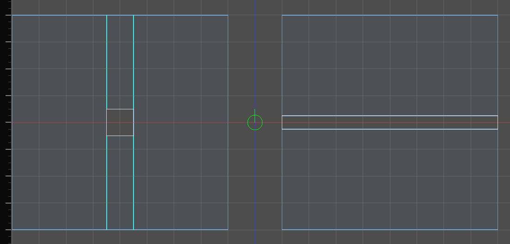
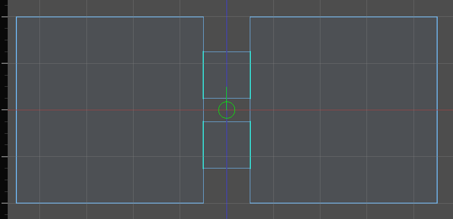
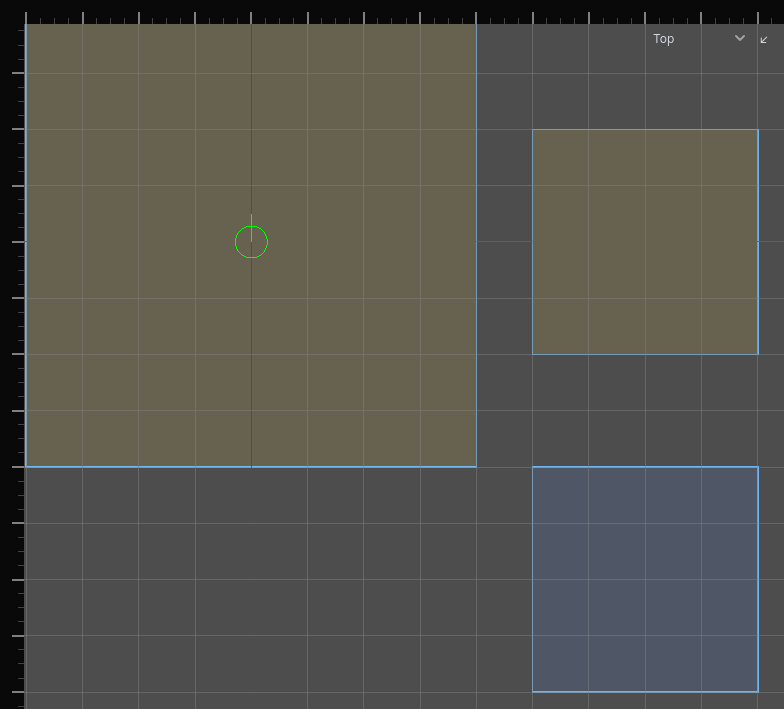

Rooms and portals
Hammerite turns your air brushes into rooms and the openings between them. Sound, light and navigation all read this. You never draw rooms or openings separately: they come from the carve. See The carved world.
Cells and rooms
A cell is one convex piece of carved air. A plain box room is one cell.
A room (also called a region) is a connected group of cells from one air brush. A pillar splits a hall into several cells around it; they are still one room.
| Carve | Cells | Rooms |
|---|---|---|
| One box | 1 | 1 |
| A hall with a solid pillar in the middle | several | 1 |
| A hall with a solid wall right across it | 2 or more | 2 |
| Two overlapping air brushes | one per brush piece | 2, joined as one space |
A solid wall that cuts an air brush in two makes two rooms, each with its own openings. Both halves share the air brush's properties, such as its acoustics.

When two rooms overlap, a point in the shared space belongs to the bigger room.
Portals
A portal is where two rooms connect. There are two kinds.
| Kind | Made by | Has an opening | Can be named |
|---|---|---|---|
| Aperture | Two rooms abutting: faces touching on the same plane | Yes, the shape where the two faces overlap | Yes |
| Overlap | Two rooms interpenetrating | No: they are one continuous space | No |
An aperture is a real hole in a wall. A doorway, a window and a hole in a floor are apertures. The wall around it stays solid.
Two openings between the same two rooms are two portals. A wall between two rooms with a door and a window in it has two apertures.

Naming doorways
A door has to know which opening it fills. It finds it by name.
- Name an opening with the Audio Portals tool. See Doors and openings.
- The name is stored on the wall you drew that the opening is cut from, on either side. It survives edits and moves with the room. A copy of the room, or either half of a clipped one, is a new room, and its openings start out unnamed.
- One name serves sound and navigation alike. See Links.
- Only apertures can be named. Overlapping rooms have no opening.
Warning: Openings between the same two rooms are numbered in a fixed geometric order, and a name belongs to a number. Cutting a new opening between two rooms that already have a named one can move the name to a different opening. The Audio Portals tool draws each name on its opening: check them after cutting.
Interior and exterior
Two different questions are asked about a room and the sky.
| Question | Asked by | A room with a window onto a courtyard |
|---|---|---|
| Does it reach the sky, directly or through openings? | Lighting | Yes: daylight comes in through the window |
| Is it open to the sky itself? | Audio | No: the rain is at the window, not overhead |
A room reaches the sky when it has a sky face, or connects to a room that does. A sky face is a face textured with a sky_ texture. See Textures.
Reaching spreads through every opening, however many rooms away. Only a room sealed off from every sky face is interior — so in a connected building one window can make almost every room reach the sky.
Overruling it
Select a room and set Interior / exterior in the inspector, beside its fill.
| Answer | What it does |
|---|---|
| Auto (from the sky) | reaches the sky if any chain of openings gets there. The default |
| Interior | never reaches the sky, and stops the reach passing through to the rooms behind it |
| Exterior | reaches the sky whatever stands between it and one |
Interior is how a cellar is sealed off from the lit courtyard it opens onto: it is the one answer that stops the spread, so putting it on the room between the two settles everything behind it as well. Exterior lights a room the sky cannot actually get to — a cave mouth, a yard under an awning.
It is a lighting answer, not a geometric one. A room declared exterior still owns no sky wall, so audio still hears the rain at its opening rather than overhead.
A room that does not reach the sky receives no sunlight, moonlight or daylight. One that does receives it only where the light has a straight line in through a sky face. See Lighting.
To see how each room is classified, choose Interior / exterior in the toolbar's cell overlay selector. Rooms that reach the sky are tinted warm yellow, the rest blue. Audio adds its own overlay; see Outdoors.

Seeing the rooms
The 2D views draw what the carve made, over the brushes you drew:
- Each room's cross-section at the view's slice depth, filled.
- The walls that are kept, outlined.
- Walls removed because they lie inside another room, shaded.
- Openings, as portal lines.
- Warning circles where two rooms nearly touch or overlap ambiguously.